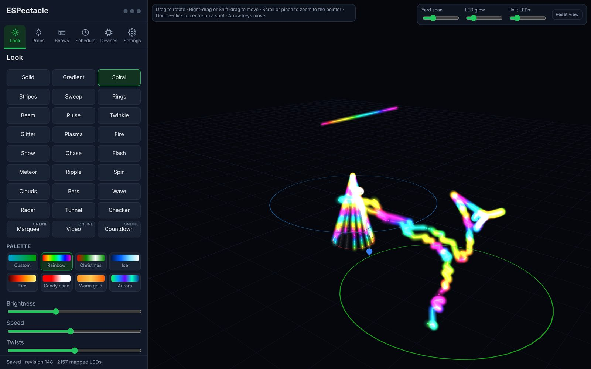
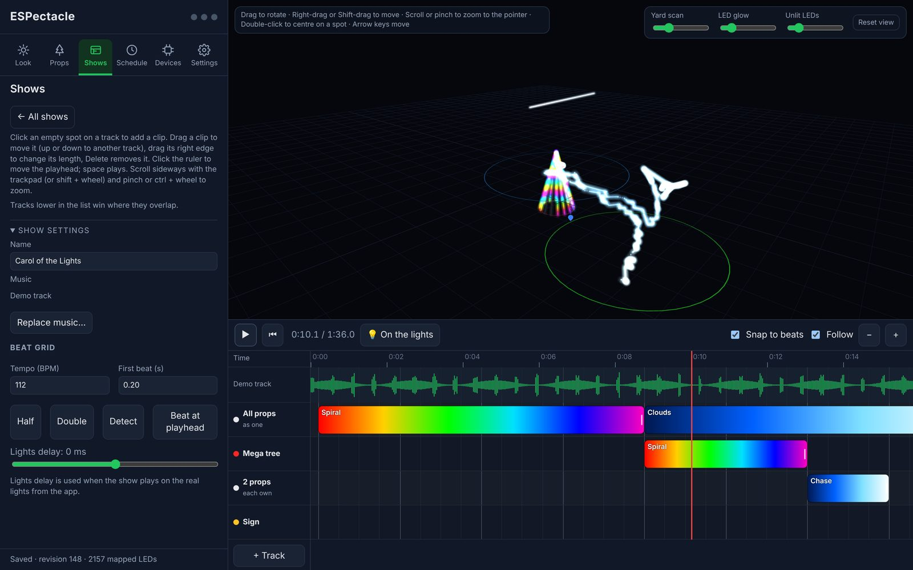
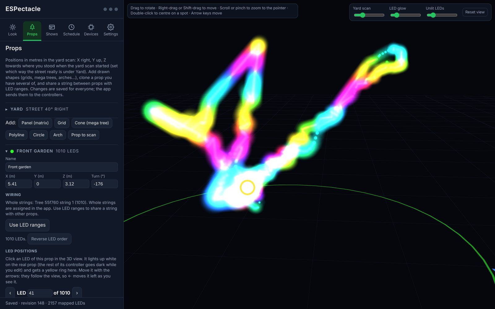
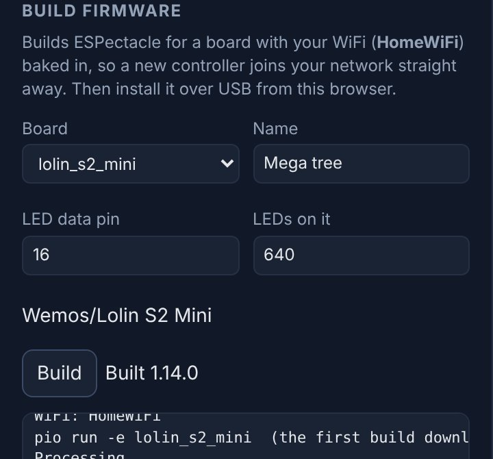

Marquee, video and countdown
Drawn by the server and streamed to the lights over DDP: scrolling text on panels, any video you upload, and a countdown to Christmas or a date you choose.
Open-source 3D LED displays for ESP32
ESPectacle finds every LED on your trees, eaves and props with your iPhone's camera, then plays effects that move through real space. A sweep crosses the yard, a spiral climbs the tree, and a message scrolls across the sign.
A sketch of a small yard with 1,214 LEDs: a mega tree, an arch, path lights, a bush, the eaves and a 32 × 8 sign. Drag to turn it.
How it works
Pick your board on the server's Devices page. It builds the firmware with your WiFi baked in and installs it over USB straight from Chrome or Edge. After that, updates go over WiFi.
The app lights each LED in turn while your iPhone watches from a couple of sides. LiDAR models often need one pass. Grids, mega trees, arches, circles, lines and panels can be drawn instead.
Scan the yard, set each prop where it stands and point the yard at the street. Nudge a stray LED on the website, or snap a run of them into a straight line.
Pick a look, build a show against your music, schedule the week, or hand the lot to Home Assistant.
Spatial effects
Each LED carries its position in the yard, its height and angle on its own prop, and which prop it belongs to. Moving effects take a direction in 3D. Picture effects such as Plasma and Checker have a camera you can point at the yard.

Shows
Lay clips on tracks against the waveform, with snap to beat and tempo detection, in the app or in the browser. Turn on On the lights and the real display follows the playhead while you edit.

Props
A prop is anything you decorate. Scan it with the camera, or draw a grid, cone, arch, circle, polyline or LED panel and give it an LED count or LEDs per metre.

Firmware
The server builds the firmware for each board with your WiFi, the controller's name, its LED pin and count already set. Install it over USB from Chrome or Edge on the server's own computer, or download it for esptool. New controllers say hello to the server and wait to be added.
mega-tree.local.
Works with what you have
Drawn by the server and streamed to the lights over DDP: scrolling text on panels, any video you upload, and a countdown to Christmas or a date you choose.
MQTT discovery adds a light with effects, a show selector, a schedules switch, a message box and a now-playing sensor. REST commands are there for scripts.
Controllers take DDP on UDP 4048 straight from xLights, and the app exports your props as .xmodel custom models with their real 3D shapes.
Send text from Home Assistant or the website and it scrolls over the props you pick, even with the lights off, then everything goes back to what it was doing.
One Docker container on any machine at home keeps the project, the music and the firmware. Phones, tablets and browsers all share it live.
Download a backup of the whole project, settings, yard scan, music and firmware, and restore it on a new machine in one step.
Architecture
The ESP32 controllers drive the LEDs and draw the effects. The server keeps the project and streams the online effects. The app maps the LEDs and runs everything from your pocket.
Hardware
Any of these boards works, and you can mix them in one display. The server builds firmware for each.
| Board | Build target | LED pins | Good for |
|---|---|---|---|
| Wemos / Lolin S2 Mini | lolin_s2_mini | GPIO 1–18, 21, 33–45 | Small and cheap, native USB, tucks into a prop |
| ESP32-S2 Saola and similar | esp32-s2-saola-1 | GPIO 1–18, 21, 33–45 | S2 dev boards with a USB-serial chip |
| ESP32-S3 DevKitC N8R2 | esp32-s3-n8r2 | GPIO 1, 2, 4–18, 21, 35–42, 47 | Dual core with PSRAM for long shows |
| ESP32-S3 N16R8 | esp32-s3-n16r8 | GPIO 1, 2, 4–18, 21, 38–42, 47 | The biggest shows, 16 MB flash |
| ESP32-WROOM-32 DevKit | esp32dev | GPIO 4, 13, 14, 16–19, 21–23, 25–27, 32, 33 | Dual core, the classic board |
WS2812B strips, WS2811 bullet pixels, SK6812 RGBW and WS2814, in any of the 6 RGB and 24 RGBW colour orders. Up to 1,500 LEDs on 4 pins per controller, sent on all pins at once, so splitting long runs across pins keeps the frame rate up.
Budget about 60 mA per LED at full white. For a big yard, run 24 V around it and step down to 5 V near each strip, then set each controller's current limit a little under what its supply gives.
Get started
You need a computer that runs Docker, a few ESP32 boards and some addressable LEDs. Scanning needs an iPhone or iPad.
$ git clone https://github.com/spinbot/espectacle $ cd espectacle/server $ cp .env.example .env # set ESPECTACLE_PASSWORD $ docker compose up -d --build
http://<your-computer>:8080 and log in.http://localhost:8080 on the computer running the server (or over HTTPS) in Chrome or Edge, with the board plugged into that computer. Browsers only allow USB access there. From anywhere else, download the firmware and flash it at 0x0 with esptool.ios/ESPectacle.xcodeproj in Xcode 16, choose your team (a free Apple Account works; its installs last 7 days) and run it on your iPhone, then point it at the server.Questions
Scanning LEDs uses an iPhone or iPad camera, and models with LiDAR do it faster. Everything else runs in the browser on a computer or an Android phone: adding and setting up controllers, wiring props, drawn shapes, looks, shows, schedules, firmware and fine-tuning.
No. With a free Apple Account you can build the app in Xcode on a Mac and run it on your own iPhone or iPad; it uses nothing that needs a paid account. Apple makes free installs stop opening after 7 days, so you reinstall from Xcode about once a week, and you can't share that build. A paid membership (US$99 a year) lets one person share the app with everyone through TestFlight or the App Store, with no developer account or Mac needed by the people installing it.
No. Everything runs on your home network with no account. The first firmware build downloads the ESP32 tools, and controllers ask an internet time server for the time so shows stay in step.
Each controller drives up to 1,500 LEDs on 4 pins, and you can add as many controllers as you like. Shows, online effects and the 3D preview span all of them.
Yes. Controllers accept DDP on UDP 4048, and xLights takes over until it stops sending. The app also exports your props as xLights custom models with their scanned shapes.
The website and the app use a password. The controllers trust your local network and have no password of their own, so keep them on a network you trust, or a separate network for smart devices.
The software is free under the MIT licence. You pay for the boards, the LEDs and the power supplies.
Firmware, server and app, all open source.
Get ESPectacle on GitHub